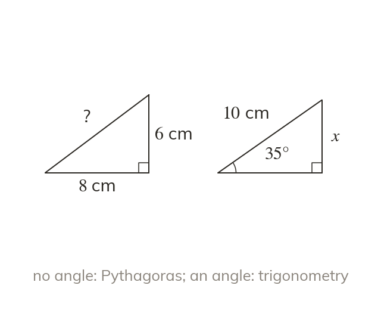
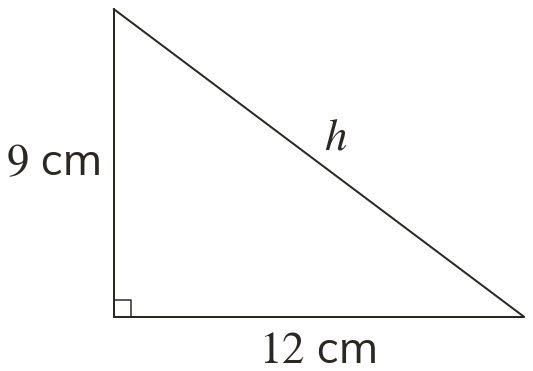
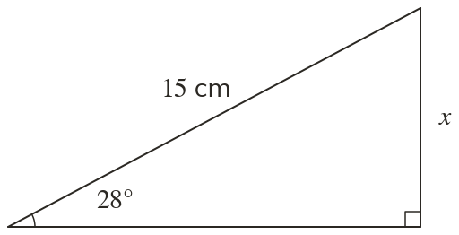
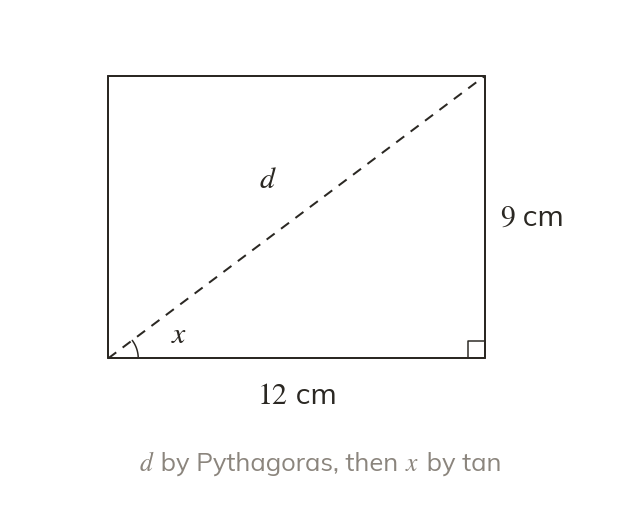
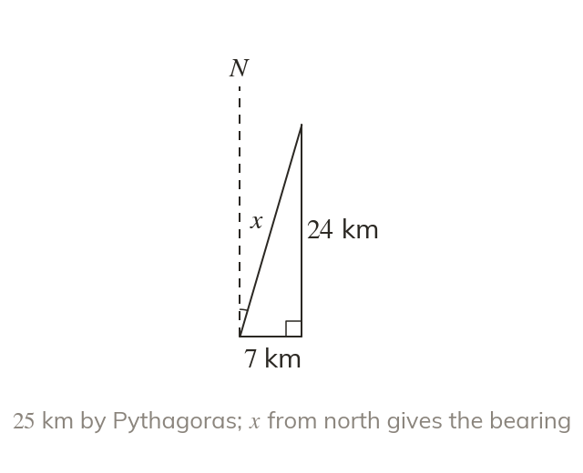
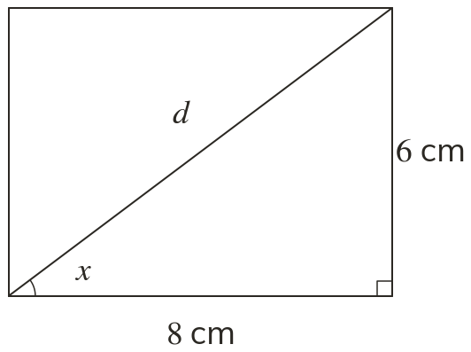
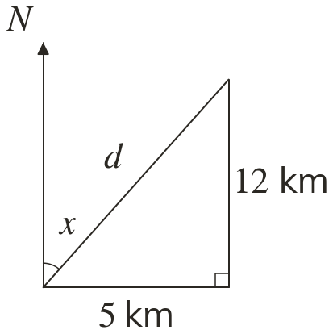

Sides only, or an angle too
Pythagoras' theorem links three sides and no angle. A trigonometric ratio links an angle and two sides.
Every right-angled triangle problem is either Pythagoras or trigonometry, and some need both. Today we learn to choose.
Work down the page at your own pace. Write every answer in your book first, then click to check it.
Read each card, then follow the worked examples one step at a time.
Pythagoras' theorem links three sides and no angle. A trigonometric ratio links an angle and two sides.

The choice is made by listing what the diagram gives and what it asks for. If an angle is in the list, the method is trigonometry.


Pick an answer. If it's wrong, the feedback tells you which mistake it was.
Read each card, then follow the worked examples one step at a time.

Some problems need both methods, one after the other. A side found by Pythagoras' theorem can then be used in a ratio.

A journey east and then north makes a right-angled triangle against the north line. Pythagoras' theorem gives the distance, and tan gives the angle for the bearing.


Pick an answer. If it's wrong, the feedback tells you which mistake it was.
Finished? Next lesson: 10.20.1 Solving Linear Inequalities.
Log in, then search for a code to practise that skill.